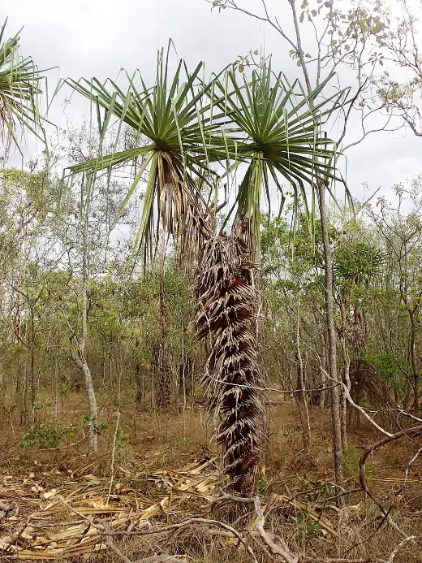

Wild nut · Apr–Oct
Pandanus nuts
Pandanus spiralis
Also called Pandanus nuts
Pandanus nuts is a wild nut you can forage from April to October in Tropical north. Spiralling palm-like tree with spiky leaves and large orange 'pineapple' fruit made of wedges.

When is pandanus nuts in season in Australia?
Pandanus nuts is usually in season April to October. Timing shifts with weather, latitude and altitude.
Where does pandanus nuts grow in Australia?
Pandanus nuts grows in Northern Territory, Queensland, Western Australia. Regions: Tropical north.
How do you recognise pandanus nuts?
Spiralling palm-like tree with spiky leaves and large orange 'pineapple' fruit made of wedges.
How do you harvest pandanus nuts?
Gather nuts from the ground once they fall, discarding any with holes or mould. Leave plenty for wildlife, which depends on them for winter.
How do you eat pandanus nuts?
Roast wedges and crack out the small rich kernels.
How do you store pandanus nuts?
Dry.
What is pandanus nuts good for?
Fat, Protein.